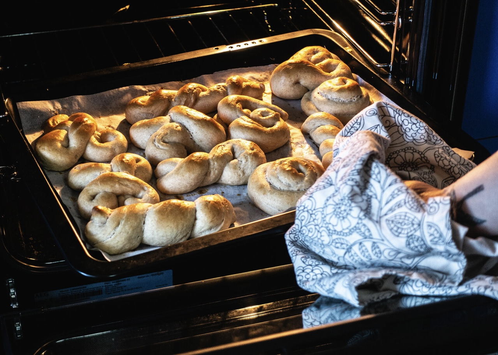
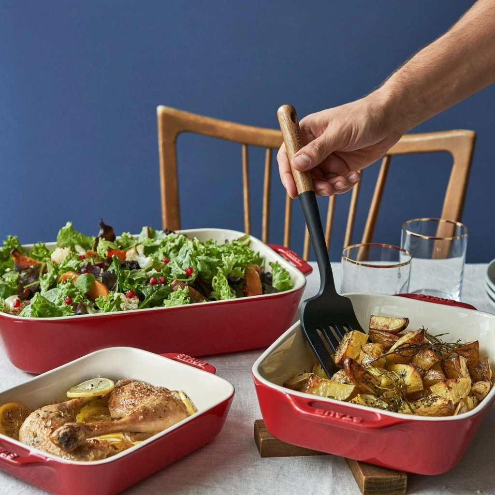

Как да печем перфектно: Техники за равномерно изпичане и златист резултат

Печенето е изкуство и наука едновременно. Правилната техника, точната температура и прецизният тайминг са ключови за постигането на равномерно изпичане и златист завършек на всяко ястие, независимо дали става дума за десерт, хляб или основно ястие. В тази статия ще разгледаме основните принципи, полезни съвети и често срещаните грешки при печенето.
Познаване на вашата фурна
- Разположение на фурната:
- Горен и долен нагревател: Идеален за повечето ястия, осигурява равномерно изпичане.
- Вентилатор: Помага за разпределението на топлината и ускорява печенето.
- Горно грилово печене: Подходящо за запичане и придаване на златиста коричка.
- Проверка на температурата:
- Използвайте кухненски термометър за фурна, за да се уверите, че зададената температура е точна.
- Ако фурната ви загрява неравномерно, завъртайте тавата на половината време за печене.
- Предварително загряване:
- Винаги загрявайте фурната предварително, за да осигурите равномерно начало на печенето.
Избор на подходящи съдове за печене
- Видове съдове:
- Метални тави: Добре провеждат топлината и са подходящи за сладкиши и хляб.
- Стъклени тави: Добри за ястия с по-дълго време за печене, като гювечи.
- Силиконови форми: Непревъзходими за лесно изваждане на сладкиши.
- Размер на тавата:
- Изберете тава, която не е прекалено голяма или малка за количеството смес. Това влияе на равномерността на печенето.
- Хартия за печене и намазване:
- Използвайте хартия за печене за лесно изваждане и почистване.
- Намазвайте формите с масло или олио, за да предотвратите залепването.

Техники за равномерно изпичане
- Разпределение на сместа
- Винаги разпределяйте сместа равномерно в тавата, за да избегнете неравномерно изпичане.
- Средна позиция на тавата
- Поставяйте тавата в средата на фурната, за да осигурите равномерно разпределение на топлината.
- Използване на водна баня
- Подходящо за кремове и чийзкейкове, водната баня предотвратява изгарянето и осигурява равномерно изпичане.
- Завъртане на тавата
- Ако фурната ви нагрява неравномерно, завъртайте тавата на 180° на половината време за печене.
Тайминг и проверка за готовност
- Време за печене
- Следвайте рецептата, но започнете да проверявате готовността 5-10 минути преди посоченото време.
- Тест с клечка
- Пъхнете дървена клечка в центъра на ястието. Ако излезе чиста, ястието е готово.
- Проверка на коричката
- Златистата коричка е добър индикатор за готовност, но внимавайте да не прегори.
Перфектното печене изисква практика, знания и внимание към детайлите. Като следвате тези съвети, ще можете да приготвяте ястия с равномерно изпичане, златист резултат и невероятен вкус. Независимо дали печете сладкиши, хляб или месо, всеки детайл има значение – от температурата на фурната до избора на подходящи съдове. Гответе с любов и наслада, защото храната не е просто задължение, тя е удоволствие.